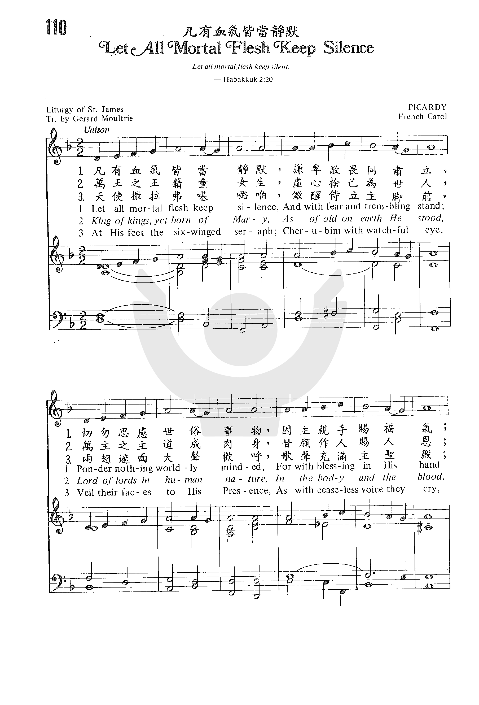
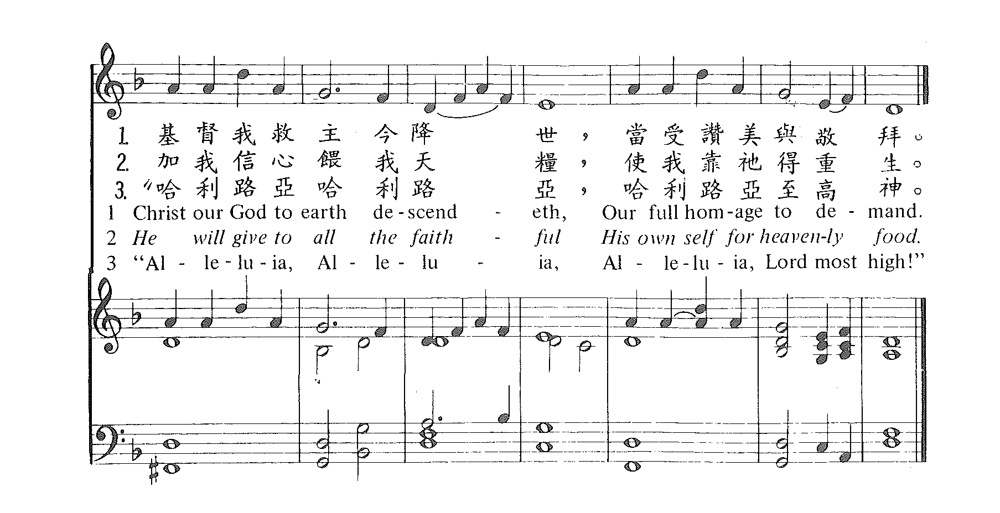

| 簡介 Let All Mortal Flesh Keep Silence |
| The flowering of English hymnody in
the 19th century included the rediscovery, translation, and
versification of ancient Christian hymns, such as this text from one of
the earliest existing Christian liturgies. The text expresses awe
at Christ's coming (st. 1) and the mystery of our perception of Christ
in the body and blood (st. 2). With images from Isaiah 6 and Revelation
5, it portrays the glory of Christ (sung to by angels) and his victory
over sin (st. 3-4). Although it has eucharistic emphasis, the text
pictures the nativity of Christ in a majestic manner and in a much
larger context than just his birth in Bethlehem. We are drawn into the
awe and mystery with our own alleluias." It is set here to an adaptation of a 17th-century French melody. The tune is more solemn than other French carols. With its minor tonality PICARDY is a fine vehicle for supporting the majesty expressed in this text. Use restraint on the organ (or any accompaniment) throughout the first two stanzas, but let it become more brilliant on stanza 3. Pull out all the stops on the "alleluias" of stanza 4. |
Let all mortal flesh keep silence
|
【凡有血氣，皆當靜默】 詩集：頌主聖詩，258 |
|
1 Let all mortal flesh keep silence, 2 King of kings, yet born of Mary, 3 Rank on rank the host of heaven 4 At his feet the six-winged seraph, |
凡有血氣，皆當靜默，敬畏謙恭同肅立， 莫想絲毫世俗事物， 因主基督臨世界，親手分賜天福神恩， 接受我眾恭敬拜。 王之王為聖母所生，早已臨世悠久長， 主之主竟取人樣式， 血肉為體掩神光，自願將其聖身寶血， 賜與信者作天糧。 千萬天軍，排列成行，前隊先鋒一路長， 周圍環繞光中之光， 親從永畫天堂降，光之光從無極領域， 親臨世間從天降。 俯伏主足下常儆醒，撒拉弗與基路伯兩翅遮面， 大聲讚美， 頌歌騰響門庭震，哈利路光，哈利路亞， 哈利路亞，主至聖。
|
|
https://www.zanmeishige.com/tab/25432.html?songbook=1&index=110


|
|
圣雅各圣餐礼文，莫特利（Gerard Moultrie ，1829，9，16-1885，4，25）英译，法国传统圣歌
“普世众生皆当肃静,谦恭侍立敬畏心，
忘却凡俗所有事情,因主基督已亲临。
亲手分赐天福神恩,接受我等齐崇敬。阿们。”
这首诗歌是东正教各教会所采用圣餐礼文仪耶路撒冷圣雅各布祷文中基路伯的祷告。可能源于公元五世纪。
英译者莫特利出生于英国鲁比的一个牧师家庭。毕业于牛津埃克斯特学院。1856年获硕士学位。他接受圣职以后先后任驻校牧师，索斯雷地方牧师和圣雅各布学院校长。他曾创作过一首进行曲，并翻译了大量圣诗作品，以发掘拉丁和德国圣诗中的宝藏而见长。
http://pt.fuyinchina.com/m/a/dianle/20191011/7334.html
曲：法國傳統曲調
調：PICARDY
編：Joseph Herl
原詞： 三世紀聖雅各禮儀禮文(Liturgy of St. James) , Tr. Gerard Moultrie
粵詞：劉永生
Oh…
凡屬血氣皆消聲響，靜默畏俯敬無量；
毋念世間虛空、囂張，獨賴救主恩賜賞。
自昊天下凡降臨世上，救世主確堪景仰。
臨在世間君中尊君，自願降卑馬利生；
垂念眾生主中尊主，受限、困身世上住，
願受死、犧牲救人命，萬代恩澤醫罪、病。
排列隊伍天軍、詩班，侍立、察偵世道間；
光中光來臨護救普世千萬，來迎見辛艱！
(臨在世間光中真光，護衛眾生見辛艱！)
罪惡在世間，眾生懼惡魔；救主除滅惡魔勢力！
(來臨除滅那惡魔！)
驅(走)黑夜，真光播！救世脫難、離禍。
神役撒拉弗飛空中，詠頌：「聖哉！」聲高聳，(唱頌：「聖哉！」)
垂翼臉、足遮掩謙恭，侍立至尊，獻貞忠，
(讚頌唱歌：)阿利路亞，阿利路亞！
阿利路亞！佇候(拜)聖容！
http://www.congsing.org/let_all_mortal_flesh.html
| Let all mortal flesh keep silence, | Job 40:3–5; Hab. 2:20; Zeph. 1:7; Zech. 2:13 |
| and with fear and trembling stand; | Ps. 2:11; Phil. 2:12 |
| ponder nothing earthly-minded, | Phil. 3:19; 4:8; Col. 3:2; 1 Pet. 4:1–2 |
| for with blessing in his hand, | Lev. 9:22; Mark 10:16; Luke 24:50; Acts 1:11 |
| Christ our God to earth descendeth, | Luke 2:11; John 6:38; 1 Thess. 4:16; Titus 2:13 |
| our full homage to demand. | Ps. 2:12; John 5:23 |
| King of kings, yet born of Mary, | Rev. 17:14; 19:16; Matt. 1:16 |
| as of old on earth he stood, | |
| Lord of lords, in human vesture, | Phil. 2:7; 1 John 4:2 |
| in the body and the blood, | |
| he will give to all the faithful | Luke 22:19 |
| his own self for heav’nly food. | John 6:53–56; 1 Cor. 10:16 |
| Rank on rank the host of heaven | Ps. 68:17; Matt. 16:27; Jude 14 |
| spreads it vanguard on the way, | Luke 2:13 |
| as the Light of light descendeth | John 1:9; 8:12 |
| from the realms of endless day, | Rev. 21:25 |
| that the pow’rs of hell may vanish | John 12:31; Acts 26:18; Heb. 2:14; Rev. 19:20 |
| as the darkness clears away. | John 1:5 |
| At his feet the six-winged seraph; | Is. 6:2 |
| cherubim, with sleepless eye, | Ex 25:20; Rev. 4:8 (KJV) |
| veil their faces to the presence, | |
| as with ceaseless voice they cry, | Rev. 4:8 |
| “Alleluia, alleluia, | Rev. 19:4 |
| alleluia Lord Most High!” |
Advent is not Christmas. Advent is a minor fast while Christmas is a major feast. While we all know what it is we are to be thinking of at Christmastide, Advent is a season for contemplating both comings of the Messiah, using the watchfulness of the ancient Hebrews as they awaited the first coming to model for us a watchfulness for the second coming.[1] The hymn above began its life as an offertory (that is, a text sung at the offering up of the Eucharist) from the liturgy of St. James, but its current form, adapted by Gerard Moultrie, can be used by English-speaking congregations as an Advent hymn in the true spirit of that winter fast.
Both comings of the Messiah are interchangeably celebrated in this hymn. In the first stanza, we find Christ, our God, descending to earth, not as a tiny baby, but as someone demanding our full homage. Yet, he descends with blessing in his hand—which could be said of both his first and second comings. Though the last stanza develops a picture from the Apocalypse, the angels of the third stanza could as easily be those of Luke 2 as of Revelation 4. The third stanza’s “that pow’rs of hell may vanish,” echo Milton’s lines in his “Hymn on the Morning of Christ’s Nativity”:
Nor all the gods beside
Longer dare abide,
Not Typhon huge ending in snaky twine:
Our Babe, to show his Godhead true,
Can in His swaddling bands control the damnèd crew.
However, neither Milton nor Moultrie entirely conflate the two Messianic advents.
But wisest Fate says no,
This must not yet be so.
The powers of evil will not entirely be frustrated until the Last Day. Until that day, we celebrate Christ’s first coming and look forward to his second by means of a special feast which is the subject of the second stanza. For even Advent’s fast is broken in the Eucharistic feast.
The second stanza is more, however, than a stanza on the Eucharist. It brings together the incarnation and immolation of Christ. Christ, unchanging since the dawn of time, is nevertheless mysteriously born of a virgin. He takes on body and blood so that he can offer up his body and blood on our behalf and feed us with his body and blood in the memorial service of the Lord’s Supper, which is to last until he comes again in body and blood to judge the living and the dead.
The French folk tune PICARDY, with its chant-like modality and stepwise motion, is a good pick for a text with origins as ancient as this one. Yet it departs from true chant in important and useful ways, for chant is not a congregational idiom but one that developed for specialists whose office allowed them to practice regularly in ways not afforded to the laity.
First of all, PICARDY is Bar form: we sing the same phrase of music for each stanza’s second pair of lines as we do for its first pair, though we have new music for its last pair. This makes the tune at once more memorable than any chant.
It also allows for useful connections between the texts of lines 1–2 and lines 3–4 in each stanza. In the first stanza, for instance, our voices and then our thoughts are silenced while singing the same tune.
Then the second stanza begins with a twofold assertion of Christ’s continuing Godhead and his incarnation. The tune’s internal repetition makes this parallelism clear. PICARDY’s parallelism appears on the small scale as well.
The rhythm of measures 1–2 is repeated in measuers 4–5. This means the tune’s first two-thirds has only one rhythmical phrase, sung four times. Even the tune’s last section—the setting of lines 5–6 in each stanza—has its parallelism. Both its phrases open with the exact same notes.
All this repetition makes the tune more easily mastered by a congregation than any chant could be. Because this hymn, like all hymns and unlike chant, is strophic, we can sing four stanzas to that same tune without learning new music for each. Though the text has origins almost as ancient as the church itself, we can be grateful that God’s continuing Reformation has allowed it to be sung by the whole body of God’s people.
[1] Note how the principal images of this hymn (heavenly food, light clearing away darkness, and cherubim facing the presence) recollect the furnishings of the tabernacle (Ex. 25) and temple: the table for bread, the golden lampstand, and the ark of the covenant. “The LORD is in his holy temple,” we read in Habakkuk 2:20; “let all the earth keep silence before him.”
https://hymnary.org/text/let_all_mortal_flesh_keep_silence
Scripture References:
st. 1 = Hab. 2:20,Zech. 2:13
st. 2 = Rev. 19:16,Luke 22:19-20
st. 3 = Matt. 16:27
st.4 = Isa. 6:2-3
Evidence suggests that the Greek text of "Let All Mortal Flesh" may date back to the fifth century. The present text is from the Liturgy of St. James, a Syrian rite thought to have been written by St. James the Less, first Bishop of Jerusalem. It is based on a prayer chanted by the priest when the bread and wine are brought to the table of the Lord.
The text expresses awe at Christ's coming (st. 1) and the mystery of our perception of Christ in the body and blood (st. 2). With images from Isaiah 6 and Revelation 5, it portrays the glory of Christ (sung to by angels) and his victory over sin (st. 3-4). Although it has eucharistic emphasis, the text pictures the nativity of Christ in a majestic manner and in a much larger context than just his birth in Bethlehem. We are drawn into the awe and mystery with our own alleluias."
Gerard Moultrie (b. Rugby, Warnickshire, England, 1829; d. Southleigh, England, 1885) translated the text from the Greek; his English paraphrase was first published in Orby Shipley's Lyra Eucharistica (1864) and entitled "Prayer of the Cherubic Hymn." The Psalter Hymnal alters that paraphrase in part to solve Reformed sensitivities about eucharistic theology. Moultrie's great-grandfather had settled in South Carolina, but after siding with England during the American Revolution, he had moved back to Britain. Educated at Exeter College, Oxford, England, Moultrie served as a pastor and chaplain in the Church of England. In addition to writing his own hymns he prepared translations of Greek, Latin, and German hymns. He also edited several hymnals, including Hymns and Lyrics for the Seasons and Saints' Days (1867) and Cantica Sanctorum or Hymns for the Black Letter Saints' Days in the English and Scottish Calendars (1880).
Liturgical Use:
Ideal to use during Lord's Supper services at Christmastime, but may be used
at any time during the Christmas season; Lord's Supper at other times of the
church year (especially as a sung part of the Great Prayer of Thanksgiving
at the beginning of the eucharistic liturgy).
--Psalter Hymnal Handbook
One of the lesser sung Christmas hymns, this paraphrase of Gerard Moultrie is based on a text that has been used by the church since the late fourth century: the Liturgy of St. James. Moultrie’s words come from a part of that liturgy known as the Cherubic Hymn, which would be chanted as the bread and wine of Holy Eucharist were brought forward. This old text evokes a sense of majesty at the incarnation of Christ, and the slow, almost chant-like melody in a minor tone wonderfully expresses that awe and mystery. We come before Christ in silence and in awe to reflect upon the mystery of the incarnation, joined even by the hosts of heaven to witness the miracle. Singing this hymn, one can imagine him or herself standing in the stable, angels above, in reverent silence to worship the King, born a child to banish the darkness away.
Though the exact words of this Christmas hymn come from the nineteenth century, they are based on one of the oldest texts still used by the church - the Liturgy of St. James. The actual date and authorship of the Liturgy are disputed. It is associated with St. James the Less, one of the twelve apostles, and some claim he wrote it as early as 60 AD. Others note the similarities in the text between this liturgy and that of St. Cyril of Jerusalem in the fourth century, and argue that the liturgy must have been written later. Regardless of when the Liturgy was written, it was produced for use in the Jerusalem church near the end of the fourth century or beginning of the fifth. In the early fifth century, it became the primary liturgy of both Jerusalem and Antioch, and we now know it as the Liturgy of St. James (John Witvliet - "Antiphon of St. James").
Part of the liturgy, known as the Cherubic Hymn, is a prayer chanted by the priest when the bread and wine are brought to the table of the Lord. Near the middle of the nineteenth century, Gerard Moultrie translated the text of this Hymn from Greek, and published a paraphrase under the name “Prayer of the Cherubic Hymn.” Today we know this hymn as “Let All Mortal Flesh Keep Silence.”
The text has stayed much the same in all hymnals that use it. Some Reformed hymnals, such as the Psalter Hymnal, have edited the text to address some sensitivities about Eucharistic theology. Other hymnals have altered words that wouldn’t be commonly understood; both of these changes amount to a few words in every verse. The biggest change comes from the Baptist Hymnal, which omits the second verse, “King of Kings, yet born of Mary.”
The tune to which Moultrie’s text is set is PICARDY, a French carol dating from the seventeenth century, and taken from the song book Chansons Populaires des Provinces de France, published in 1860 – four years before the hymn was first published in Britain in 1864. Every hymnal uses this tune, most in the key of F.
The minor tonality of this tune perfectly expresses the sense of awe and majesty that the text evokes. To follow the text, it is best to begin the hymn with limited instrumentation, and build throughout until the declaration of the “Alleluias.” Make sure though that even with limited instrumentation, you have something underneath to sustain the vocals (such as organ synth or strings). Here are some examples:
Suggested music:
The hymn has Eucharistic emphasis, but it paints a much broader picture of the nativity of Christ. As such, it is ideal to use this hymn during the Lord’s Supper at Christmastime, but it can also be used throughout the Christmas season or during Communion throughout the year, particularly as the Great Prayer of Thanksgiving.
Laura de Jong,
Hymnary.org
https://www.umcdiscipleship.org/resources/history-of-hymns-let-all-mortal-flesh-keep-silence-1
"Let All Mortal Flesh Keep Silence"
Liturgy of St. James
The United Methodist Hymnal, No. 626
St. James
Let all mortal flesh keep silence,
and with fear and trembling stand;
ponder nothing earthly minded,
for with blessing in his hand,
Christ our God to earth descendeth,
our full homage to demand.
“Let all mortal flesh keep silence” is one of the earliest Christian hymns still
in common usage. Its roots date to the fourth century and is based on the Greek
text “Prayer of the Cherubic Hymn” in the Liturgy of St. James.
According to hymnologist Albert Bailey, the ancient Liturgy of St. James
originated with the Church at Jerusalem and is sometimes called the Liturgy at
Jerusalem. Originally it was thought to have been the work of James the Lesser,
the brother of Jesus, but now seems to have been created under Cyril of
Jerusalem c. 347 and was later amplified.
Dr. Bailey explains the context of the original hymn: “In performance this
liturgy leads up to the celebration of the Eucharist, our Communion. Since the
Eucharist was an awesome rite in which, according to universal ancient belief,
Christ was actually present under the guise of bread and wine, it should be
approached only after due spiritual preparation.”
The celebrant would say the following Preface during the Eucharistic liturgy,
setting the context for the hymn: “We remember the sky, the earth and the sea,
the sun and the moon, the stars and all creation both rational and irrational,
the angels and archangels, powers, mights, dominations, principalities, thrones,
the many-eyed Cherubim who say those words of David: ‘Praise the Lord with me.’
We remember the Seraphim, whom Isaias saw in spirit standing around the
throne of God, who with two wings cover their faces, with two their feet and
with two fly; who say: ‘Holy, holy, holy, Lord of Sabaoth.’ We also say
these divine words of the Seraphim, so as to take part in the hymns of the
heavenly host.”
The hymn is thus imbued with the mystery of Isaiah 6 and Revelation 4 and
invites the singer to participate in the mystery of the Incarnation, a sense of
entering the Holy of Holies.
During the Oxford Movement, a time in which some of the early texts of
the Christian church were translated from Greek and Latin into English, Gerard
Moultrie (1829-1885), an Anglican priest, provided a translation from the Greek
in 1864 that appeared in the collection Lyra Eucharistica by Orby Shipley.
English hymnologist J. R. Watson notes: “In the original Liturgy of St. James,
[the hymn] was used as the bread and wine were brought into the sanctuary: it
brings out the full drama of the occasion.”
Stanza two concludes, “he will give to all the faithful/his own self for
heavenly food,” lines reminiscent of John 6:35-58, beginning with, “I am the
bread of life; he who comes to me shall not hunger, and he who believes in me
shall never thirst.” (RSV)
Stanza three clearly draws upon Revelation 4 with images of “Light of
light descend[ing]” echoing the Nicene Creed.
The final stanza conflates Isaiah 6 and Revelation 4:8 with visions of
heavenly beings who sing eternally:
At his feet the six-winged seraph,
cherubim with sleepless eye,
veil their faces to the presence,
as with ceaseless voice they cry:
Alleluia, Alleluia, Alleluia Lord Most High!
Unlike the hymn, in Revelation 4:8 the creatures sing: “Holy, holy, holy, is the
Lord God Almighty, who was and is and is to come!” (RSV), which echoes Isaiah
6:3.
The tune PICARDY comes from a book of French folksongs, Chansons Populaires des
Provinces de France, published in 1860. The famous English composer Ralph
Vaughan Williams (1872-1958) paired it with this text for the English Hymnal
(1906), and the text and tune have been inseparable since that time.
Dr. Hawn is professor of sacred music at Perkins School of Theology.
https://www.hymnologyarchive.com/let-all-mortal-flesh-keep-silence
with PICARDY
I. Text: Liturgical Origins
The Christian hymn “Let all mortal flesh keep silence” is based on a portion of
the Liturgy of St. James, an ancient liturgy believed to have roots in the
Jerusalem ministry of the Apostle James (see Acts 21:17–19). The form of the
liturgy preserved and performed by the Orthodox tradition dates to the late
fourth or early fifth century, owing to similarities with the Liturgy of St.
Basil. It is possibly the work of (or based on the work of) St. Cyril of
Jerusalem. The liturgy has parallels to Cyril’s 23rd Catechetical Lecture (ca.
347 | Google Books). One of the oldest surviving manuscripts is Vaticanus
Graecus 2282 (9th century), held at the Biblioteca Apostolica Vaticana. The
Liturgy of St. James was mentioned in canon 32 of the decrees of the Council in
Trullo (The Quinisext Council, 692). Early commentaries on the Liturgy of St.
James were written by Moses Bar Kepha, Bishop of Mosul (ca. 813–903), and
Dionysius Bar Salibi (d. 1171), Bishop of Armid. It has manuscript traditions in
other languages, especially Syriac, but also including Georgian, Armenian, and
Ethiopian.
Among the various strains of Orthodoxy, the liturgy is not universally
recognized, having been replaced in many traditions by the Liturgy of St. John
Chrysostom, but where it is still used it is most closely associated with the
Feast of St. James (October 23) and sometimes also the first Sunday after
Christmas.
The Liturgy of St. James includes a Communion rite with a vivid and memorable
text, chanted by the priest before the bread and wine are presented (the “Great
Entrance,” see Figs. 1–2). The text draws in part from Habakkuk 2:20: “The Lord
is in his holy temple; let all the earth keep silence before him.”
View fullsize
Fig. 1. J.M. Neale, The Liturgies of S. Mark, S. James, S. Clement, S.
Chrysostom, S. Basil, 2nd ed. (London: J.T. Hayes, 1868), p. 48.
Fig. 1. J.M. Neale, The Liturgies of S. Mark, S. James, S. Clement, S.
Chrysostom, S. Basil, 2nd ed. (London: J.T. Hayes, 1868), p. 48.
View fullsize
Fig. 2. J.M. Neale, The Liturgies of S. Mark, S. James, S. Clement, S.
Chrysostom, S. Basil, and the Church of Malabar, Translated (London: J.T. Hayes,
1859), pp. 39–40.
Fig. 2. J.M. Neale, The Liturgies of S. Mark, S. James, S. Clement, S.
Chrysostom, S. Basil, and the Church of Malabar, Translated (London: J.T. Hayes,
1859), pp. 39–40.
As an example of how this would be performed in a modern Orthodox context, a
notable English version of the liturgy was developed and published by St.
Anthony’s Monastery (Florence, Arizona) for their Divine Music Project (Fig. 3 |
website). This melody is credited to the Greek cantor Iakovos the Protopsaltis
(ca. 1740–1800) of Mt. Athos, Greece. The score includes words in English,
Greek, and transliterated Greek.

View fullsize
Fig. 3. “Let all mortal flesh keep silence,” Liturgy of St. James, Divine Music
Project (Florence, AZ: St. Anthony’s Monastary, n.d.), excerpt.
Fig. 3. “Let all mortal flesh keep silence,” Liturgy of St. James, Divine Music
Project (Florence, AZ: St. Anthony’s Monastary, n.d.), excerpt.
II. Text: English Hymn
Gerard Moultrie (1829–1885), an Anglican minister and scholar, versified this
section of the Liturgy of St. James. His hymn was first published in the second
edition of Lyra Eucharistica (London : Longman, Green, Longman, Roberts, and
Green, 1864 | Fig. 4), a collection of Communion hymns compiled and edited by
Orby Shipley. Shipley’s aim in producing the collection was a perceived lack of
available hymns on the subject, which he attributed in part to the way “the
English Office for Holy Communion is not considered sufficiently elastic to
allow of hymns, other than those which the Office itself already contains,” and
accordingly, “it is only natural that such hymns from the Latin and from the
Greek, as well as those of German and other origin, have been but rarely
translated into English verse” (p. vi).
View fullsize
Fig. 4. Lyra Eucharistica, 2nd ed. (London : Longman, Green, Longman, Roberts,
and Green, 1864).
Fig. 4. Lyra Eucharistica, 2nd ed. (London : Longman, Green, Longman, Roberts,
and Green, 1864).
Moultrie’s hymn was based on the prose translation published by J.M. Neale
(1818–1866) in his edition of The Liturgies of S. Mark, S. James, S. Clement, S.
Chrysostom, S. Basil, and the Church of Malabar, Translated (London: J.T. Hayes,
1859 | Fig. 2). In the preface to that collection, Neale credited the
translation to Thomas Rattray, but the text of Neale’s edition does not match
Rattray’s edition of 1744. The attribution seems to have been an error, since in
the corresponding Greek edition, also edited by Neale, he said “The present
edition is not an exact reprint of any of the above mentioned,” a list including
Rattray (1744), Trollope (1848), and Neale’s own previous edition in Tetralogia
Liturgica (1849). If the Greek edition was his own work, then the corresponding
English translation would also have to be his.
The hymn by Moultrie is in four stanzas of three lines (or arguably six lines,
8.7.8.7.8.7). It follows the liturgical text closely, with some elaborations.
Moultrie, like Neale, wrote other poems based on Greek and Latin texts, though
his are lesser known. Coincidentally, Moultrie spent the last twelve years of
his life as warden of St. James’s College, Southleigh, Oxfordshire, England.
Some hymnal editors have omitted or altered the second stanza, pointing to
potential concern over the doctrine of transubstantiation in the line “He will
give to all the faithful his own self for heavenly food,” especially in relation
to the preceding lines, starting with “Christ our God to earth descendeth.” The
line itself does not espouse any particular doctrine or interpretation, being
consistent with Christ’s own language, “This is my body, which is given for you”
(Luke 22:19, Matt. 26:26, Mark 14:22, 1 Cor. 11:24). See also Christ’s
declaration “I am the bread of life” and the related discussion in John 6:25–59.
The imagery of light and darkness in stanza 3 is reflected in John 1:5–9. The
picture of angelic worship in stanza 4 (and the sense of supreme reverence in
stanza 1) recalls passages such as Isaiah 6:1–3 and Revelation 4.
Hymnologist J.R. Watson, in his Annotated Anthology of Hymns (2002) described
the hymn this way:
The hymn is a sublime command, and the invocation of silence adds emphasis to
the awe-inspiring greatness of God which is signalled in this hymn. This is the
opposite of those hymns which express the kindness and closeness of God (“What a
friend we have in Jesus”): here God appears in majesty and light, accompanied by
the glory of the heavenly host. The Eucharist is celebrated as an event in which
this glory is given to the faithful (p. 12).
A notable alternative text was produced by the accomplished hymnal editor Percy
Dearmer (1867–1936) for the Enlarged Edition of Songs of Praise (1931).
Dearmer’s text starts in imitation of Moultrie but then becomes almost entirely
his own work. His concept of God seemed to be in want of something less
intimidating, as he changed “fear and trembling” into “awe and welcome” in the
first line, and “our full homage to demand” into “loving homage to demand.”
Dearmer’s version has been repeated in some other collections.
III. Tune
The tune generally synonymous with this text, PICARDY, first appeared in a
French songbook, Chansons Populaires des Provinces de France (Paris: Lécrivain
et Toubon, 1860 | Fig. 5). This French folk song was transcribed and arranged
for piano by J.B. Wekerlin from Mme. Pierre Dupont, who learned it during her
childhood in Picardy, France.

View fullsize
BalladedeJC01-ChnsPplrs1860.jpg
View fullsize
Fig. 5. Chansons Populaires des Provinces de France (Paris: Lécrivain et Toubon,
1860).
Fig. 5. Chansons Populaires des Provinces de France (Paris: Lécrivain et Toubon,
1860).
Jesus dressed like the poor:
“Give me charity.”
Jesus dressed like the poor:
“Give me charity.”
“From the crumbs of your table
I will make a good dinner.”
The crumbs of our table,
the dogs will eat them well.
The crumbs of our table,
the dogs will eat them well.
They are bringing back some hares,
and don’t bring back anything to you.
“Ma’am, who is in the window,
give me charity.
Ma’am, who is in the window,
give me charity.”
—Ah! Go up, go up, good poor man,
a good supper you will find.
After they had cleaned up a late dinner,
he asks to go to bed.
After they had cleaned up a late dinner,
he asks to go to bed.
—Ah! Go up, go up, good poor man,
a good, fresh bed you will find.
As they climbed the steps,
three beautiful angels shined on them.
As they climbed the steps,
three beautiful angels shined on them.
“Ah! Don’t fear anything, ma’am,
it is the moon which appears.”
“In three days you will die,
to paradise you will go;
in three days you will die,
to paradise you will go;
and your husband, ma’am,
he will go to burn in hell.”
The original French text describes a husband and wife who are approached by
Jesus, who is disguised as a pauper. The man would rather give his leftovers to
his dogs, but the woman feeds him and gives him a room. Jesus then tells her
they will both die in three days; she will go to heaven, and he will go to hell.
The song is possibly inspired by or adapted from the story of the rich man and
Lazarus in Luke 16:19–31.
Ralph Vaughan Williams (1872–1958) was the first to pair this tune with
Moultrie’s text, in The English Hymnal (Oxford: University Press, 1906 | Fig.
6), where Williams named the tune after Mme. Dupont’s childhood residence. The
tune is regarded by some scholars as being from the seventeenth century.

View fullsize
Fig. 6. The English Hymnal (Oxford: University Press, 1906).
Fig. 6. The English Hymnal (Oxford: University Press, 1906).
Paul Westermeyer, in the Companion to Evangelical Lutheran Worship (2010),
called this tune “serious and profoundly engaging” (p. 319). The editors of the
Companion to Church Hymnal (2005) likewise praised the tune and its pairing with
Moultrie’s text:
Dr. Ralph Vaughan Williams, with his usual genius for finding a suitable tune to
accompany a text, set Moultrie’s hymn to the tune PICARDY, a tune which greatly
helps to enhance the hymn’s expression of the sense of awe and mystery we
experience in the Eucharist where, in ways beyond our comprehension, our Lord
comes “from the realms of endless day” to be present with us “with blessing in
his hand.” Text and music together provide a memorable description of the
Eucharist as a “window” through which, for a brief moment, we may glimpse the
eternal praise and worship offered by “the host of heaven” (pp. 578–579).
by CHRIS FENNER
for Hymnology Archive
2 December 2019
rev. 18 December 2019
Related Resources:
Liturgy of St. James:
“Liturgy of St. James,” Orthodox Wiki:
https://orthodoxwiki.org/Liturgy_of_St._James
Abba Seraphim, “An introduction to the liturgy of St. James,” The British
Orthodox Church:
http://britishorthodox.org/miscellaneous/an-introduction-to-the-liturgy-of-saint-james/
Vaticanus Graecus 2282:
https://digi.vatlib.it/view/MSS_Vat.gr.2282
“Liturgy of St. James,” St. Anthony’s Monastery:
http://www.stanthonysmonastery.org/music/StJames.htm
Thomas Rattray, Ancient Liturgy of the Church of Jerusalem being the Liturgy of
St. James, Freed from all latter additions and interpolations of whatever kind,
and so restored to its Original Purity: by comparing it with the Account given
of that Liturgy by St. Cyril in his fifth Mystagogical Catechism, and with the
Clementine Liturgy, &c (London: James Bettenham: 1744): PDF
William Trollope, The Greek Liturgy of St James edited with an English
Introduction and Note; together with a Latin Version of the Syriac Copy, and the
Greek Text restored to its original purity and accompanied by a literal English
Translation (Edinburgh: T & T. Clark, 1848): WorldCat.org
J.M. Neale, The Liturgies of S. Mark, S. James, S. Clement, S. Chrysostom, S.
Basil (London: J.T. Hayes, 1859): Archive.org
J.M. Neale, The Liturgies of S. Mark, S. James, S. Clement, S. Chrysostom, S.
Basil, and the Church of Malabar, Translated (London: J.T. Hayes, 1859):
Archive.org
Charles Mercier, La liturgie de saint Jacques: édition critique du texte grec
avec traduction latine (Paris : Firmin-Didot, 1946).
K.N. Daniel, A Critical Study of Primitive Liturgies, Especially that of St.
James, 2nd Ed., Rev. & Enl. (Tiruvalla: T.A.M. Press, 1949).
Athanasius Yeshue Samuel, Anaphora: The Divine Liturgy of Saint James the First
Bishop of Jerusalem according to the Rite of the Syrian Orthodox Church of
Antioch, with “The History of Saint James Liturgy” by Dr. M. Moosa (Hackensack,
N.J.: Syrian Orthodox Church in the United States and Canada: 1967).
The Divine Liturgy of the Holy Glorious Apostle James … Set to Melodies of the
Russian Orthodox Church (Basking Ridge, NJ: Monastery of St. Mark of Ephesus,
©1978).
Kurian Valuparampil, “St. James Anaphora: An Ecumenical Locus. A Survey of the
Origin and Development of St. James Anaphora,” Christian Orient, Vol. 8, Issue 4
(1987).
The Divine Liturgy of Saint James (Iakovos), Brother of the Lord: A New
Translation by Members of the Faculty of Hellenic College (Brookline, MA: Holy
Cross Orthodox Press, 1988).
John R.K. Fenwick, The Anaphoras of St Basil and St James. An Investigation into
their Common Origin, Orientalia Christiana Analecta 240 (Rome: Ponificium
Institutum Orientale, 1992).
John D. Witvliet, “The Anaphora of St. James,” Essays in Early Eastern
Eucharistic Prayers, ed. Paul F. Bradshaw (Collegeville, MN: Liturgical Press,
1997), pp. 153–172.
Let All Mortal Flesh Keep Silence (Hymn)
Percy Dearmer & Archibald Jacob, “Let all mortal flesh keep silence,” Songs of
Praise Discussed (Oxford: University Press, 1933), p. 157.
Albert Edward Bailey, “Let all mortal flesh keep silence,” The Gospel in Hymns
(NY: Charles Scribner’s Sons, 1950), pp. 287–288.
J. Ithel Jones, et al., “Let all mortal flesh keep silence,” The Baptist Hymn
Book Companon, rev. ed. (London: Psalms and Hymns Trust, 1967), pp. 127–128.
Richard Watson & Kenneth Trickett, “Let all mortal flesh keep silence,”
Companion to Hymns and Psalms (Peterborough: Methodist Publishing House, 1988),
p. 179.
William J. Reynolds, “Let all mortal flesh keep silence,” Handbook to the
Baptist Hymnal (Nashville: Convention Press, 1992), p. 178.
Fred L. Precht, “Let all mortal flesh keep silence,” Lutheran Worship Hymnal
Companion (St. Louis: Concordia, 1992), pp. 258–259.
Carlton R. Young, “Let all mortal flesh keep silence,” Companion to the United
Methodist Hymnal (Nashville: Abingdon Press, 1993), p. 460.
J.R. Watson, “Let all mortal flesh keep silence,” An Annotated Anthology of
Hymns (Oxford: University Press, 2002), pp. 12–13.
Edward Darling & Donald Davison, “Let all mortal flesh keep silence,” Companion
to Church Hymnal (Dublin: Columba Press, 2005), pp. 578–579.
Paul Westermeyer, “Let all mortal flesh keep silence,” Companion to Evangelical
Lutheran Worship (Minneapolis: Augsburg Fortress, 2010), pp. 318–319.
Carl P. Daw Jr., “Let all mortal flesh keep silence,” Glory to God: A Companion
(Louisville: Westminster John Knox, 2016), pp. 351–353.
J.R. Watson, “Let all mortal flesh keep silence,” Canterbury Dictionary of
Hymnology:
http://www.hymnology.co.uk/l/let-all-mortal-flesh-keep-silence,-and-with-fear-and-trembling-stand
“Let all mortal flesh keep silence,” Hymnary.org:
https://hymnary.org/text/let_all_mortal_flesh_keep_silence
Posted on January 2, 2013 by Steven Wedgeworth
347px-Ghent_Altarpiece_D_-_Adoration_of_the_Lamb_2

Today we have a combination of ancient and modern. The words to “Let All
Mortal Flesh Keep Silence” were written around the 4th cent., the tune was
composed in the 17th cent., but the combination of both as we know it today was
not until 1906. Ralph Vaughan Williams gets the credit for the final product,
and while he is another one of those names whose association always signals
something great, in this case he was working with truly excellent resources. The
tune “Picardy” comes from a popular French folk song, and the lyrics date back
all the way to the Divine Liturgy of St. James.
That liturgy is still sung by certain Christian churches in the East, and a few
of them even maintain that it dates all the way back to James the brother of
Christ, the bishop of the church in Jerusalem. This would make it of apostolic
origin, but their claim seems overreaching. One obvious objection is the
language. You’ll find the beautiful line, “the triune light of the Godhead,
which is unity subsisting in trinity, divided, yet indivisible: for the Trinity
is the one God Almighty,” which also indicates the Nicene character of the
theology. While pre-Nicene Christians shared the substance of the theology, much
of this terminology did not actually exist prior to the 3rd cent. The anaphora
(the consecration of the bread and wine) also shows historical development from
the catechisms of Cyril of Jerusalem and older Egyptian prayers. So most
scholars agree that this indicates a 4th cent. origin. Still, that’s not too
shabby. How old is your liturgy?
The original text for “Let All Mortal Flesh Keep Silence” occurs in the prayer
of commencement during what is known as the “Cherubic Hymn.” It is called this
because it is modeled after the song of the angels (which are actually there
called seraphim) in Isaiah 6 and the heavenly worship service in Revelation 4.
It also draws from Habakkuk 2:20 which says, “But the Lord is in His holy
temple. Let all the earth keep silence before Him.” This text also highlights
the original meaning. You see, it wasn’t a Christmas hymn, but a Eucharistic
hymn. The idea was that Jesus was in His holy temple, which is now the Church.
It was about what was happening in worship.
But that also brings us to a potential problem. Anyone familiar with even the
basics of church history knows that there have been many controversies over
worship, liturgy, and the Lord’s Supper. And given today’s assumptions and
connotations, the Cherubic Hymn does sound a little scary. It reads:
Let all mortal flesh be silent, and stand with fear and trembling, and meditate
nothing earthly within itself. For the King of kings and Lord of lords, Christ
our God, comes forward to be sacrificed, and to be given for food to the
faithful. And the bands of angels go before Him with every power and dominion,
the many-eyed cherubim, and the six-winged seraphim, covering their faces, and
crying aloud the hymn, Alleluia, Alleluia, Alleluia.
I’ve known at least one Presbyterian to refuse to sing “Let All Mortal Flesh
Keep Silence,” because he viewed the Cherubic Hymn as teaching a false view of
the Lord’s Supper, connecting the idea that Jesus is about to “be sacrificed” to
the Eucharist itself. I don’t think that this is necessarily a deal-breaker for
Protestants, but I do agree that it’s potentially dangerous and has to be
handled with care. I could give you legitimate theological and historical
explanations at this point. The word “sacrifice” can actually mean several
things (to “offer” being the most basic), the hymn occurs towards the beginning
of the liturgy and not during the consecration of the elements (thereby not
signalling a “change” in the elements), and the Reformed actually do teach that
believers feed upon Christ through the power of the Holy Spirit. Still, I
understand the concern.
Connecting the Eucharist to the Incarnation is tricky business. On one level it
is correct. The bread and wine do symbolize Jesus’ humanity. But we don’t
believe that they actually turn into his humanity, nor do we believe that the
parallel is absolute in every way. You see, the bread and wine also
sacramentally communicate Jesus’ divinity. There is no “hypostatic union”
between the divine nature and the bread and wine, and pushing it that far really
shows the problems. Just leave it at the level of symbol and sacrament. The
Supper is a covenantal marker. Additionally, “Christmas,” along with the rest of
the liturgical calendar, does not recycle through Jesus’ incarnation, life,
death, and resurrection. Those things all happened in history and are not
repeated. We don’t do them again and again. The liturgy commemorates and
memorializes them, even holding them up to God as a covenantal testimony, but
they don’t repeat each time we meet for worship.
But perhaps that’s all too complicated and none of it would ever have occurred
to you while singing “Let All Mortal Flesh Keep Silence.” Well good, because
that’s the right answer! You see, the hymn we sing today, even though it has a
history of development, is not the Cherubic Hymn of Saint James’s Divine
Liturgy. No, it is something else. It’s “Let All Mortal Flesh Keep Silence.” The
words have been expanded, and that it is now associated with Christmas shows
that there’s been a fundamental shift in meaning. And that’s perfectly good.
It’s what we want.
In fact, we could kick it up a Protestant notch and say that the fact that this
song is now a Christmas hymn moves it further away from strictly Eucharistic
overtones and avoids any potential problems associated with that history.
Instead of folks thinking about Jesus coming into the bread and wine and being
sacrificed during the service, now the overwhelming connotation is that Jesus
came at His incarnation, when he was “born of Mary,” and that He “gives His own
self for heavenly food” in His sacrifice on the Cross and through the gospel.
Don’t you think that works quite naturally now?
Again, this is my philosophy of liturgy and hymnody– it is all made for man and
not man for it. We use the tools of worship to assist and aid our worshiping of
God. This doesn’t mean we should be overly casual with it, changing everything
all the time. In fact, as a general rule, the more often you make changes, the
worse your service will be. Still, there are times when it is appropriate and
even necessary to make changes, and we all have to live and move and have our
being in the place where God put us. A lot of change and development has already
occurred, and most of it is now the default setting for our communities. If you
first have to explain to everyone why what they’re doing really means something
other than what they all think it does, then you’re probably over-thinking it
(and making a pastoral mess in the process). The fact is, for the overwhelming
majority of us, “Let All Mortal Flesh Keep Silence” is simply a beautiful song
about the Incarnation which we most closely associate with the Christmas season.
When we sing it, we think about God’s kindness in sending His Son to be made
man, to be our savior. And we are stirred to worship. That’s what it’s all
about, and so embrace it and enjoy it.
The point of liturgy is to aid worship. It should teach a little, and in that
sense it needs to be orthodox, but its primary function is to guide the believer
in devotion. And that’s what this song does as well. Let us all join with the
angels in singing God’s praises to His glory. Alleluia, Alleluia, Alleluia, Lord
Most High!
https://en.wikipedia.org/wiki/Let_all_mortal_flesh_keep_silence
Let all mortal flesh keep silence (Greek: Σιγησάτω πᾶσα σάρξ βροτεία), also known as Let all mortal flesh keep silent, is an ancient chant of Eucharistic devotion based on words from Habakkuk 2:20, "Let all the earth keep silence before him" (Hebrew: הַ֥ס מִפָּנָ֖יו כָּל־הָאָֽרֶץ has mippanaw kol ha-arets, Septuagint: ὁ δὲ κύριος ἐν ναῷ ἁγίῳ αὐτοῦ εὐλαβείσθω ἀπὸ προσώπου αὐτοῦ πᾶσα ἡ γῆ) and Zechariah 2:13, "Be silent, all flesh, before the LORD; for he has roused himself from his holy dwelling" (Hebrew: הַ֥ס כָּל־בָּשָׂ֖ר מִפְּנֵ֣י יְהוָ֑ה כִּ֥י נֵעֹ֖ור מִמְּעֹ֥ון קָדְשֹֽׁו׃ ס. Septuagint: εὐλαβείσθω πᾶσα σὰρξ ἀπὸ προσώπου κυρίου διότι ἐξεγήγερται ἐκ νεφελῶν ἁγίων αὐτοῦ). The original was composed in Greek as a Cherubic Hymn for the Offertory of the Divine Liturgy of St James;[1] it probably antedates the rest of the liturgy and goes back at least to AD 275, with local churches adopting arrangements in Syriac. In modern times, the Ralph Vaughan Williams arrangement of a translation from the Greek by Gerard Moultrie to the tune of "Picardy", a French medieval folk melody, popularized the hymn among other Christian congregations.
Borrowed from the old Divine Liturgy of St. James, the ancient hymn Let all mortal flesh keep silent replaces the Cherubikon in the Divine Liturgy of St. Basil the Great in the Eucharist celebrated in the morning of Holy Saturday. The Byzantine Rite only makes use of the Divine Liturgy of St. Basil ten times a year, and during most of the liturgical year the Divine Liturgy of St. John Chrysostom is used instead. However, even in the dates when the Divine Liturgy of St. Basil is used, the normal Cherubikon is usually sung. It is however replaced by the anthem Let all mortal flesh keep silent specifically on Holy Saturday.
However, Churches that use the Divine Liturgy of St. James as their principal Liturgy or as a Liturgy in frequent use, such as the Syriac Orthodox Church, the Syriac Catholic Church, the Syro-Malankara Catholic Church and the Maronite Church sing the hymn Let all mortal flesh keep silent regularly, whenever the Divine Liturgy of St. James is used, since the anthem Let all mortal flesh keep silent is the standard Cherubic Hymn of that Liturgy.
When the Russian Orthodox priest Eugraph Kovalevsky (later Saint John of Saint-Denis) set about reconstructing a form of the Gallican Rite mass for use by the Western Orthodox Christians of France in the middle of the 20th century, the manuscripts to which he had access did not provide any clue to the text of the Sonus and Laudes, which were the two chants anciently sung during the offertory procession of the bread and wine to the altar. The ancient hymn Let all mortal flesh keep silent was deemed to be a fitting substitute, both because of its ancient precedent in an identical position in the Divine Liturgy of St. James and also because its theme was in keeping with the repeated emphasis on silence in the Gallican liturgical tradition. Today, this hymn continues to be used as a standard part of the Divine Liturgy of St Germanus in various Orthodox churches, only being replaced by other hymns during certain feasts and seasons.
Ancient Greek: Σιγησάτω πᾶσα σάρξ βροτεία, καὶ στήτω μετὰ φόβου καὶ τρόμου, καὶ μηδὲν γήϊνον ἐν ἑαυτῇ λογιζέσθω· ὁ γὰρ Βασιλεῦς τῶν βασιλευόντων, καὶ Κύριος τῶν κυριευόντων, προσέρχεται σφαγιασθῆναι, καὶ δοθῆναι εἰς βρῶσιν τοῖς πιστοῖς· προηγοῦνται δὲ τούτου, οἱ χοροὶ τῶν Ἀγγέλων, μετὰ πάσης ἀρχῆς καὶ ἐξουσίας, τὰ πολυόμματα Χερουβίμ, καὶ τὰ ἑξαπτέρυγα Σεραφίμ, τὰς ὄψεις καλύπτοντα, καὶ βοῶντα τὸν ὕμνον· Ἀλληλούϊα, Ἀλληλούϊα, Ἀλληλούϊα.[n 1]
Let all mortal flesh keep silent, and stand with fear and trembling, and in itself consider nothing earthly; for the King of kings and Lord of lords cometh forth to be sacrificed, and given as food to the believers; and there go before Him the choirs of Angels, with every Dominion and Power, the many-eyed Cherubim and the six-winged Seraphim, covering their faces, and crying out the hymn: Alleluia, Alleluia, Alleluia.
Да молчит всякая плоть человеча, и да стоит со страхом и трепетом, и ничтоже земное в себе да помышляет; Царь бо царствующих, и Господь господствующих, приходит заклатися и датися в снедь верным. Предходят же Сему лицы ангельстии со всяким Началом и Властию, многоочитии Херувими, и шестокрилатии Серафими, лица закрывающе, и вопиюще песнь: Аллилуйя, Аллилуйя, Аллилуйя.
Sileat omnis caro mortalis et stet cum timore et tremore neve quidquam terrestre in se meditetur. Rex enim regnantium, Christus Deus noster, prodit ut mactetur deturque in escam fidelibus, praecedunt autem hunc chori angelorum cum omni principatu et potestate, cherubim multis oculis et seraphim sex alis praedita, facies velantia et vociferantia hymnum, alleluia.
https://en.wikipedia.org/wiki/Picardy_(hymn)
Picardy is a hymn tune used in Christian churches, based on a French carol; it is in a minor key and its meter is 8.7.8.7.8.7.[1] Its name comes from the province of France from where it is thought to originate.[2] The tune dates back at least to the 17th century, and was originally used for the folk song "Jésus-Christ s'habille en pauvre". First published in the 1848 collection Chansons populaires des provinces de France, "Picardy" was most famously arranged by Ralph Vaughan Williams in 1906 for the hymn "Let All Mortal Flesh Keep Silence", in the English Hymnal, the words of which are taken from the Byzantine Greek Liturgy of St. James translated by Gerard Moultrie a chaplain at Shrewsbury School.[3]
In addition, Gustav Holst used the hymn in his "3 Festival Choruses" Op. 36a.
While the tune is most commonly sung to the words "Let all mortal flesh keep silence", it is also set to other words including "Christians, let us love one another" and 'You, Lord, are both lamb and shepherd".[4]
https://en.wikipedia.org/wiki/Picardy_third
A Picardy third (/ˈpɪkərdi/; French: tierce picarde), also known as a Picardy cadence, is a major chord of the tonic at the end of a musical section that is either modal or in a minor key. This is achieved by raising the third of the expected minor triad by a semitone to create a major triad, as a form of resolution.[1]
For example, instead of a cadence ending on an A minor chord containing the notes A, C, and E, a Picardy third ending would consist of an A major chord containing the notes A, C♯, and E. Note that the minor third between the A and C of the A minor chord has become a major third in the Picardy third chord.[2]
Philosopher Peter Kivy writes:
According to Deryck Cooke, "Western composers, expressing the 'rightness' of happiness by means of a major third, expressed the 'wrongness' of grief by means of the minor third, and for centuries, pieces in a minor key had to have a 'happy ending' – a final major chord (the 'tierce de Picardie') or a bare fifth."[4]
As a harmonic device, the Picardy third originated in Western music in the Renaissance era.
What makes this a Picardy cadence is shown by the red natural sign. Instead of the expected B-flat (which would make the chord minor) the accidental gives us a B natural, making the chord major.
Listen to the final four measures of "I
Heard the Voice of Jesus Say" with ( Play (help·info))
and without (
Play (help·info))
and without ( Play)
Picardy third (harmony by R.
Vaughan Williams).[5]
Play)
Picardy third (harmony by R.
Vaughan Williams).[5]
The term was first used in 1768 by Jean-Jacques Rousseau, although the device was used in music centuries earlier.[6][7] Rousseau argues that “the term is used jokingly by musicians”, suggesting it might have never had an academic basis, a tangible origin, and might have sprung out of idiomatic jokes in France in the first half of the 18th century. But his attempt at explaining why this term was used remains unconvincing: “the [practice] remained longer in Church Music, and, consequently, in Picardy, where there is music in a lot of cathedrals and churches”.
Robert Hall hypothesizes that, instead of deriving from the Picardy region of France, it comes from the Old French word "picart", meaning "pointed" or "sharp" in northern dialects, and thus refers to the musical sharp that transforms the minor third of the chord into a major third.[8]
The few Old French dictionaries in which the word picart (fem. picarde) appears give “aigu, piquant” as a definition. While piquant is quite straightforward — meaning spiky, pointy, sharp — aigu is much more ambiguous, because it has the inconvenience of having at least three meanings: “high-pitched/treble”, “sharp” as in a sharp blade, and “acute”. Considering the definitions also state the term can refer to a nail ("clou") (read masonry nail), a pike or a spit, it seems aigu might be there used to mean "pointy" / “sharp”. However, not “sharp” in the desired sense, the one relating to a raised pitch, but in the sense of a sharp blade, which would thus completely discredit the word picart as the origin for the Picardy third, which also seems unlikely considering the possibility that aigu was also used to refer to a high(er)-pitched note, and a treble sound, thus perfectly explaining the use of the word picarde to designate a chord whose third is higher than it should be.
Not to be ignored is the existence of the proverb "ressembler le Picard"[9] ("to resemble an inhabitant of Picard") which meant “éviter le danger” (to avoid danger). This would link back to the humorous character of the term, that would have thus been used to mock supposedly cowardly composers who used the Picardy third as a way to avoid the gravity of the minor third, and perhaps the backlash they would have faced from the academic elite and the Church by going against the time’s scholasticism.
Ultimately, the origin of the tierce picarde will likely never be known for sure, but what evidence there is seems to point towards these idiomatic jokes and proverbs as well as the literal meaning of picarde as high-pitched and treble.
In medieval music, such as that of Machaut, neither major nor minor thirds were considered stable intervals, and so cadences were typically on open fifths. As a harmonic device, the Picardy third originated in Western music in the Renaissance era. By the early seventeenth century, its use had become established in practice in music that was both sacred (as in the Schütz example above) and secular:
Examples of the Picardy third can be found throughout the works of J. S. Bach and his contemporaries, as well as earlier composers such as Thoinot Arbeau and John Blow. Many of Bach's minor key chorales end with a cadence featuring a final chord in the major:
In his book Music and Sentiment, Charles Rosen shows how Bach makes use of the fluctuations between minor and major to convey feeling in his music. Rosen singles out the Allemande from the keyboard Partita in B-flat, BWV 825 to exemplify "the range of expression then possible, the subtle variety of inflections of sentiment contained with a well-defined framework". The following passage from the first half of the piece starts in F major, but then, in bar 15, "Turning to the minor mode with a chromatic bass and then back to the major for the cadence adds still new intensity."[11]
Many passages in Bach's religious works follow a similar expressive trajectory involving major and minor keys that may sometimes take on a symbolic significance. For example, David Humphreys (1983, p. 23) sees the "languishing chromatic inflections, syncopations and appoggiaturas" of the following episode from the St Anne Prelude for organ, BWV 552 from Clavier-Übung III as "showing Christ in his human aspect. Moreover the poignant angularity of the melody, and in particular the sudden turn to the minor, are obvious expressions of pathos, introduced as a portrayal of his Passion and crucifixion":[12]
Notably, Bach's two books of The Well-Tempered Clavier, composed in 1722 and 1744 respectively, differ considerably in their application of Picardy thirds, which occur unambiguously at the end of all of the minor-mode preludes and all but one of the minor-mode fugues in the first book.[13] In the second book, however, fourteen of the minor-mode movements end on a minor chord, or occasionally, on a unison.[14] Manuscripts vary in many of these cases.
While the device was used less frequently during the Classical era, examples can be found in works by Haydn and Mozart, such as the slow movement of Mozart's Piano Concerto 21, K. 467:
Philip Radcliffe says that the dissonant harmonies here "have a vivid foretaste of Schumann and the way they gently melt into the major key is equally prophetic of Schubert".[15] At the end of his opera Don Giovanni, Mozart uses the switch from minor to major to considerable dramatic effect: "As the Don disappears, screaming in agony, the orchestra settles in on a chord of D major. The change of mode offers no consolation, though: it is more like the tierce de Picardie, the 'Picardy third' (a famous misnomer derived from tierce picarte, 'sharp third'), the major chord that was used to end solemn organ preludes and toccatas in the minor keys in days of old."[16]
The fierce C minor drama that pervades the Allegro con brio ed appassionato movement from Beethoven's last Piano Sonata, Op. 111, dissipates as the prevailing tonality turns to the major in its closing bars "in conjunction with a concluding diminuendo to end the movement, somewhat unexpectedly, on a note of alleviation or relief".[17]
The switch from minor to major was a device used frequently and to great expressive effect by Schubert in both his songs and instrumental works. In his book on the song cycle Winterreise, singer Ian Bostridge speaks of the "quintessentially Schubertian effect in the final verse" of the opening song "Gute Nacht", "as the key shifts magically from minor to major".[18]
Susan Wollenberg describes how the first movement of Schubert's Fantasia in F minor for piano four-hands, D 940, "ends in an extended Tierce de Picardie".[19] The subtle change from minor to major occurs in the bass at the beginning of bar 103:
In the Romantic era, those of Chopin's nocturnes that are in a minor key almost always end with a Picardy third.[citation needed] A notable structural employment of this device occurs with the finale of the Tchaikovsky Fifth Symphony, where the motto theme makes its first appearance in the major mode.[citation needed]
According to James Bennighof: "Replacing an expected final minor chord with a major chord in this way is a centuries-old technique—the raised third of the chord, in this case G♯ rather than G natural,[verification needed] was first dubbed a 'Picardy third' (tierce de Picarde) in print by Jean-Jacques Rousseau in 1797 ... to express [the idea that] hopefulness might seem unremarkable, or even clichéd."[20]
https://www.youtube.com/watch?v=jGaNdKabvQ4 Picardy Third: When Minor Resolves to the Major Chord
https://hellomusictheory.com/learn/picardy-third/
Written By Samuel Chase Last updated 3rd January 2021 If you’ve listened to enough classical music or old choral hymns, chances are you’ve likely come across what’s known as the Picardy Third. It is less common in music nowadays, but it’s something foundational in music that is often taught in school.
This post will cover everything we need to know about a Picardy Third, like what it is and what reasons it’s used for. To help us learn more about it, we should recap what major and minor mean.
Table of Contents What are Major and Minor? The two main adjectives used to describe scales, chords, or keys in music are major and minor.
Something is major if the third scale degree is major – that is, it is four semitones above the tonic note of the song.
For example, a C Major scale and chord has an E♮ in it, which is four semitones above C:
C major scale In a minor scale and chord, the third scale degree is minor, which is only three semitones above the tonic:
C natural minor scale In addition to the third scale degree, the 6th and 7th scale degrees are also flattened to be made minor.
This change from the major third to the minor third makes the C Major chord (C – E – G) C minor instead (C – Eb – G).
It also changes the related chords one can use in a song.
For example, a song in C Major will have chords like F Maj, G Maj, A min, E min, and D min.
A song in C minor will have chords like F min, Eb Maj, Ab Maj, Bb Maj, and D dim.
Picardy Third Definition A Picardy Third is a very specific ending, or cadence, to a piece of music.
It happens when a piece of music that is in a minor key ends on a Major tonic chord instead.
For example, a piece of music in A minor has a Picardy Third when it ends on an A Major chord:
Chord progression with a Picardy Third All of the chords in the above example are taken from the key of A minor, which has a C♮ as well as an F♮ and a G♮.
However, the final chord is an A Major chord, which has a C# in it, a note not used in the rest of the piece.
Because music in a Major key is often heard as happy and bright, and music in a minor key is heard as sad and somber, a Picardy Third acts as a happy resolution to an otherwise darker and sadder song.
It is like a “happy ending” in a film, expressed through music.
Here is an example from Bach’s “Jesus, Meine Freude”. Listen for the final chord with the Picardy Third at 1:36:
Jesus, Meine Freude’ by Bach https://youtu.be/x8KBprMFq0s
Why is it Called a Picardy Third? As a harmonic device the Picardy Third was first introduced in the Renaissance Era, which is between years 1400-1600.
It was often thought at this time that the Major key and major chords were more “correct”, stable, and consonant than minor chords, so audiences and musicians expected the music to end that way.
The Picardy Third was first labelled as such by Jean-Jaques Rousseau in 1797, written as the “Tierce de Picarde”.
Some scholars believe it is called this because the practice of ending minor music in the major key originated from the Picardy region of France.
Other scholars, however, believe that “Picardy” is derived from the old French word “picart”, which means “sharp” or “pointed”.
Therefore, cadences that ended with a raised, or sharpened third were called Picardy Thirds.
Notable Examples
Picardy Thirds are found a lot in sacred choral music and hymns, especially those from the 15th to 17th centuries.
One famous example is “Heu Mihi, Domine” from Heinrich Schuetz’s Cantiones Sacrae, in 1625.
The piece starts at 0:11 in the key of A min, and the Picardy Third occurs at the end of the first phrase, at 0:21:
Heinrich Schuetz – ‘Heu Mihi, Domine’
The majority of Chopin’s Nocturnes that are in a minor key almost always ended with a Picardy Third.
For example, here is his “Nocturne in F minor”, op. 55 no. 1.
Although the whole piece up to the end has been in the key of F minor, Chopin ends the piece on four long-held F Major chords:

‘Nocturne in F minor, op. 55 no. 1’ by Chopin
Beethoven’s final piano sonata, “Piano Sonata No. 32 in C Minor”, ends its first movement with many Picardy Third cadences in a row, with the final and most dissonant one happening at 9:34-9:37:

‘Piano Sonata No. 32 in C Minor’ by Beethoven
Summing Up That is all there is to know about the Picardy Third.
It is a useful and interesting tool that composers have used for centuries to end a minor piece on a major tonic chord.
This slight change at the end of a song really affects the entire piece and leaves the audience with a whole different feeling when they’ve finished listening to it.
We hope this article has been helpful to learn about the history and uses of Picardy Thirds, and feel free to leave a comment below if you have any questions!
https://hellomusictheory.com/learn
https://www.goldenlampstand.org/glb/read.php?GLID=11004
以賽亞書第六章所記，是該書的第一個異象，也是先知以賽亞接受神呼召的經過。按本書第一章一節，以賽亞在烏西雅王在位時已開始說預言，怎麼又會在烏西雅王崩時才接受主的呼召？可能因為以賽亞雖在烏西雅崩前已經開始說預言，卻未特別蒙召；也可能以賽亞經過一個時期的工作後，開始對自己所傳的信息有一點灰心，因此神特意在異象中向他顯現，一方面印證他所領受的職分和他所傳的信息，另一方面使他的靈性得着復興，重新得力。隨着先知蒙召的經歷之後，他所要肩負的是更艱巨的使命。
這個異象的顯現，使以賽亞對於神無限的威榮和他自己的卑污不配，以及那些落在罪中的靈魂的迫切需要，都有了前所未有的認識。這種認識使他在日後的工作中，能更熱切，更明確的教人認識他所傳揚的神。
先知特別記明見異象的時候，是“當烏西雅王崩的那年”，顯示烏西雅王駕崩，與先知所見的異象，必有些關聯。
烏西雅（又名亞撒利雅，參代下二六：1）是猶大國的一個好王，在位五十二年，是列王中在位第二長久的。在一個已經開始敗落的國家中死去一個好王，實在不能不令人感覺悲觀，但就在烏西雅王崩的那年，先知看見了那永活的主坐在高高的寶座上。這兩件事擺在一起，很明顯地告訴我們，世上的君王雖然會死，但那萬世之王的主神是永遠活着的。以賽亞的王雖然死了，但那差遣以賽亞去說預言的神依然坐在寶座上。
烏西雅雖然是個好王，但他在國勢強盛之後，就“心高氣傲”，擅自進神的殿燒香，以致干犯了神的律法，患了大痲瘋，直到死日（代下二六：16-23）。公義的神，對任何人犯罪都必管教懲治，即使是好君王也不例外。這位干犯聖殿之事奉的烏西雅，受了神的懲治而長了大痲瘋，難免因污穢而過着獨居寂寞的生活，落落寡歡地結束他的晚年。就在這時，以賽亞在異象中看見神如何設立祂的寶座在聖殿中，使以賽亞很嚴肅地認識到：無論誰，在這至高至聖的神跟前，用嘴唇尊敬祂，心卻遠離祂；一面偏行己路，一面又到聖殿來獻祭的人，是多麼無知的干犯神和祂的殿，是必定難免遭受懲罰和管教的了！
我見主坐在高高的寶座上。
我們從先知所描寫的異象中，對神發生一種極其崇高的感覺，是我們無法形容的。事實上，每一次神開了我們的眼睛，使我們更多看見祂自己的時候，我們都必定會深深地感覺到祂無比的崇高，又深深感覺自己極其低微。所以每一個真正認識神的人，都必定是十分謙卑的人。“高高的寶座上”呂振中譯本作“崇高又高聳的寶座上”（參英文聖經N.A.S.B及N.I.V.等），更顯其寶座的高貴氣派。
按聖殿是沒有寶座之設的。（以色列人出埃及時，在曠野所建會幕，連一張椅子都沒有，因所有祭司必須站着事奉，參來一○：11。）但在此以賽亞所見，是天上的聖殿。地上君王的寶座設在王宮，但天上神的寶座設在聖殿中。我們的心必須先成為神的聖殿，才能讓祂安設寶座。倘若我們有像以賽亞這種看見，真知道祂的尊榮崇高，也必俯伏在祂寶座之下，翹首仰望祂那高高在上的威榮。
祂的衣裳垂下，遮滿聖殿。
神雖然坐在高高的寶座上，祂的衣裳卻垂下，“遮滿聖殿”。“遮滿聖殿”英譯作“充滿聖殿”，呂振中譯本作“垂滿聖殿”。實際情形是：祂的寶座極其高聳（地上聖殿高度有限，內殿雖較摩西所建之至聖所，聖所各高一倍，仍僅高30肘，參王上六：2），但這是天上聖殿，且在異象中所見為顯出神的偉大，而祂的衣裳極其寬長，遮蓋到寶座四周，甚至至聖所的滿地。在此我們不妨設想，神是坐在天上的寶座，祂的衣裳下垂，遮滿了地上的聖殿，因這是先知在異象的境界所看見的情形，未必要按照地上聖殿的地理環境之限制。所以凡進到這殿�堛漱H，也都在祂垂下之衣裳的蔭庇之下，好像慈母用她的衣裳將她的孩子掩藏在懷�堛滷“峞C那位現今已經為我們升入高天，坐在至高神寶座右邊的基督，祂的慈愛，聖潔，公義，憐恤的衣裳，正從祂的寶座上垂下，遮蔽着，眷顧保護着屬祂的人。凡尊祂在寶座上作王的，也都在祂的蔭庇之下。先知以賽亞不但看見崇高無比的神，也看見了這極其崇高的神，從祂至高無比的威榮中所“垂下”的憐憫眷顧。
其上有撒拉弗侍立，各有六個翅膀，用兩個翅膀遮臉，兩個翅膀遮腳，兩個翅膀飛翔。（2節）
先知看見寶座的周圍有特別親近神的天使撒拉弗侍立左右，他們也都是侍候神的僕役。神讓以賽亞看看他們怎樣事奉神，實在是讓他上了一課天上神學課程。他們的臉當然比我們這些罪人的臉更有光榮，更美善可愛；但他們在這至高的神面前，仍然謙卑地用兩個翅膀遮臉，不敢在神面前露臉。他們的腳雖然只行聖潔的路，仍用兩個翅膀遮腳，恐怕在這至尊至聖的神面前顯得無禮；然後用其餘的兩個翅膀飛翔，以便迅速遵從神的吩咐。這些撒拉弗的態度，顯出那些大膽褻瀆神的罪人，在神面前是何等的無知和狂妄呢！
彼此呼喊說：“聖哉，聖哉，聖哉。”（3節）
他們是彼此對說，“Calling one another”（N.I.V.），你對我說，我對你說地稱頌神的聖潔和榮耀的。顯見他們對神的榮耀，聖潔和無限的尊貴，有極深的敬佩，以致要重複地彼此對說着，才足以發表他們那種極想稱頌神的心意。他們的稱頌，使今天那些帶着沉睡的聲音，有口無心地唱着讚美詩的人，和那些用似乎很動聽的聲音，卻是只為着滿足自己的虛榮心而歌頌的人們，顯出他們的稱頌實際上等於在犯罪。倘若我們看見世上較為美麗或衣飾華貴異常的人，尚且會不知不覺脫口讚歎，何況看見這位極其崇高，無比尊貴的神呢？所以這些撒拉弗禁不住讚美神說：“聖哉，聖哉，聖哉…”
雅各書告訴我們不能用舌頭咒詛那照着神形像被造的人（雅三：9）。在這�堳o給我們一個實例，說明受造的天使們的舌頭最高尚的用處，就是用來稱頌至高的神。
天使稱頌神的聖潔的結果，聖殿“門檻的根基震動”。這種震動是神顯出祂的威榮的表記。古時神降臨西乃山時，西乃全山冒煙而震動。保羅和西拉在腓立比獄中唱詩讚美神時，也曾使監獄的地基搖動了，監門立刻全開，眾囚犯的鎖鏈也都鬆開了。（徒一六：26）現今我們若有出於心靈的讚美，也同樣能震撼陰府，震倒罪人心中抗拒神的堅固營壘。
以賽亞看見了神的榮耀的時候，他內心中發生怎樣的反應？
看見自己是該死的人：他自己呼喊說：“禍哉，我滅亡了…”他立刻覺得自己是一個該死的罪人。注意：並非任何一個撒拉弗對他說他是一個該死的人，但當他看見那坐在高高寶座上的主，聽見這些撒拉弗稱頌神的聖潔的時候，他就自己領悟到他在神面前實在是一個該死的人了。只有真“看見”神的人，才會像以賽亞這樣自己呼喊說：“禍哉，我滅亡了！”那些不認識神的人，只會歌頌自己，絕不會對自己說些類似咒詛的話的。但事實上，當以賽亞為他自己呼喊說：“禍哉”的時候，我們所見到的，並不是以賽亞受到甚麼災禍，反倒是得着更大的福分。當他呼喊說：“禍哉，我滅亡了”的時候，我們實在應當為他歌唱說：“福哉，你蒙恩了！”一個人真正看見自己的敗壞時，正是他的靈性獲得大轉機的時候。如果我們也像以賽亞這樣看見自己，我們也能像他一樣蒙恩。
看見自己嘴唇不潔：“因為我是嘴唇不潔的人，又住在嘴唇不潔的民中…”為甚麼當以賽亞看見自己的該死，不堪的時候，會特別覺得他是“嘴唇不潔的人，又住在嘴唇不潔的民中”，而不提到他別樣的“不潔”？事實上，在我們許多的“不潔”中，最大部分的都是屬嘴唇的“不潔”。雅各告訴我們說： “若有人自以為虔誠，卻不勒住他的舌頭，反欺哄自己的心，這人的虔誠是虛的。” （雅一：26）可見我們的言語最能影響我們的虔誠生活。所以，當先知以賽亞在看見聖潔之神的威榮而為自己的不潔呼喊的時候，特別提到他是嘴唇不潔的人，又住在嘴唇不潔的民中！
另一方面，先知以賽亞所以會特別看見他自己是嘴唇不潔的人，也可能和聽見撒拉弗所唱“聖哉，聖哉，聖哉”的稱頌有關。當他看這些聖潔無罪的天使，尚且那麼熱誠地以歌頌神的聖潔為樂時，就深自慚愧，覺得自己日常口中所說的和耳朵中所聽見的話，都是多麼卑污不潔，並未照着神造人嘴唇的高貴用途常說造就人的好話。
有些人因見異象而驕傲自誇，輕看別人，但以賽亞見異象的結果，卻自慚形穢地謙卑下來，自己深覺不配，既驚異神的聖潔，又驚嘆自己的卑污…，這才是真正見了“異象”，蒙了恩典！
“聖哉，聖哉，聖哉”原是一種驚嘆語。這些撒拉弗天天見到神的面，既不是偶然看見神的榮耀聖潔而驚奇讚嘆，而仍舊天天對神無限之威榮聖潔驚嘆不已，竭力歌頌不已！顯見神的榮耀與聖潔是何等偉大無量，絕非渺小人們所能體會萬一的，難怪以賽亞一看見這異象時立即呼喊說：“禍哉，我滅亡了！”神用不着指明以賽亞有甚麼罪，以賽亞卻自然看出自己的不潔來。這就像一個衣衫襤褸的人跑到一間十分華麗雅潔的客廳時，自然會自慚形穢，不敢坐下一樣。今天我們正需要這種看見。
當先知這樣為自己的不潔而呼喊“禍哉”的時候，神就差遣一位撒拉弗用壇上的火炭潔淨他的嘴唇。雖然先知在看見自己是嘴唇不潔的之前，已經是嘴唇不潔的了。但神不在他沒有看見自己的不潔之前就用火炭潔淨他，只在他自覺不潔且應滅亡時才潔淨他，神雖然極願意我們經歷祂更深的拯救，但祂只按我們所看見的深度向我們施恩。
注意：天使用來沾先知嘴唇使他得潔淨的，乃是從壇上取下來的火炭。這壇必然是燔祭壇，因為聖所中的香壇只用來燒香，不可能有炭火。為甚麼燔祭壇上的火炭能使罪惡得赦呢？在以色列人祭祀的各種禮儀中，是沒有用火炭來潔淨犯罪之人的，但這�堨�知在異象中被天使用壇上的火炭潔淨他，是有特別的靈意的。耶穌基督曾在十字架的祭壇上獻上祂自己，成了有永遠功效的贖罪祭，現今這十字架祭壇上的火也能使一切沾着它的人得着完全的潔淨。雖然天使只用火炭輕輕沾一沾先知的口，但先知所得着的是完全的潔淨：不只是口得着潔淨，他整個人都得潔淨。一切和十字架的火炭接觸的人，他們所得的拯救也是完全的，雖然他們未必能在一時之間認清一切的罪，雖然他們不是生命的每一部分都被火炭沾過，但他們一沾到這“火炭”之後，所得着的拯救乃是完全的拯救。一個基督徒如果因主的憐憫，特別看見某一種罪，而為那罪憂傷，結果，不單他那個罪受了對付，更是他整個生命有了改變而在主的恩中更加進深。跟十字架壇上的炭火接觸的，雖然只是他所特別看見的軟弱，但十字架的炭火所焚燒的，卻是他整個的生命。
我又聽見主的聲音，說：“我可以差遣誰呢？誰肯為我們去呢？”我說：“我在這�堙A請差遣我！”（8節）
我們要留意神怎樣向以賽亞說話。神並沒有用一種命令的方式吩咐他去傳道，祂只在以賽亞面前表示內心的歎息：“我可以差遣誰呢？誰肯為我們去呢？”慈愛的神看見那些硬着心，沉迷在罪中的百姓的危險，很想打發人去警戒他們，在最後的關頭盡力挽回他們，但竟沒有願受差遣的人。當神把祂心中這種歎息擺在以賽亞面前的時候，以賽亞立刻就答應說：“我在這�堙A請差遣我。”
許多人說：“神還沒有呼召我，所以我還不能決心傳道。”他們似乎以為要像使徒保羅那樣，在大馬色的路上忽然被大光照着，仆倒在地，然後才算是神的呼召臨到他們。但事實上，許多時候神只是使我們聽見祂心中那種歎息，像以賽亞所聽見的那樣。神完全不用勉強的方法，乃讓我們自己去答應祂。
神的歎息滿了激發的作用，使愛祂的人知道祂對我們的期望是甚麼，祂絕不迫使我們就範，我們卻會因祂愛的激勵（林後五：14），甘願把自己一生擺在祂十字架的祭壇上。
神所要交付給以賽亞的是十分艱難的使命。當以賽亞向神說：“我在這�堙A請差遣我”之後，神就指示他，他的工作對象將會都是心蒙脂油，硬心不信的百姓。他不但肯受神的差遣，且肯向那硬心不聽他警告的人傳講神的信息；不但肯向硬心的人傳講神的信息，且不改變祂的信息，不因人的硬心而迎合人的喜歡來傳神的道理。這才是真正肯受差遣的意思。人們所看重的是怎樣可以有更有功效的工作果子，那結果只證明那個人或那團體的成功。但神所看重的是人怎樣忠於祂的使命，傳達祂要他們傳的信息。神早知道以賽亞傳道的結果：“我們所傳的有誰信呢？耶和華的膀臂向誰顯露呢？”（賽五三：1）但神所要求於以賽亞不是人聽不聽他所傳的，乃是他是否忠心傳神所要他傳的，他的成功不在於有多少人聽他的話，乃在於他是否忠心不渝地按神的託付完成使命。
聖經說：“因為時候要到，人必厭煩純正的道理，耳朵發癢，就隨從自己的情慾，增添好些師傅。”
（提後四：3）今天願聽神僕忠告的人愈來愈少，愛聽能迎合人的“情慾”的道理的人更多，神對以賽亞所發出的歎息，正同樣向我們發出：“我可以差遣誰呢？誰肯為我們去呢？”誰肯為神說直話呢？誰肯把福音毫不掩飾，不改變的照實傳出去呢？如果神今日讓我們聽見同樣的歎息，我們將怎樣回答神的歎息呢？我們是否已經多次抑制那曾在我們良心中發出的歎息，不讓它發聲？我們有沒有以賽亞那樣的心志，勇敢接受神的託付？
https://zh.wikipedia.org/wiki/%E7%86%BE%E5%A4%A9%E4%BD%BF
https://baike.baidu.hk/item/%E6%92%92%E6%8B%89%E5%BC%97/10765336